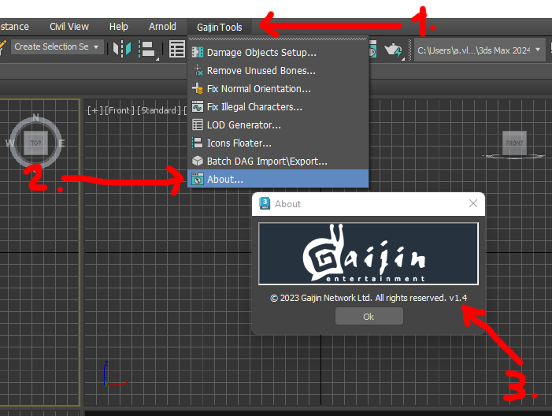
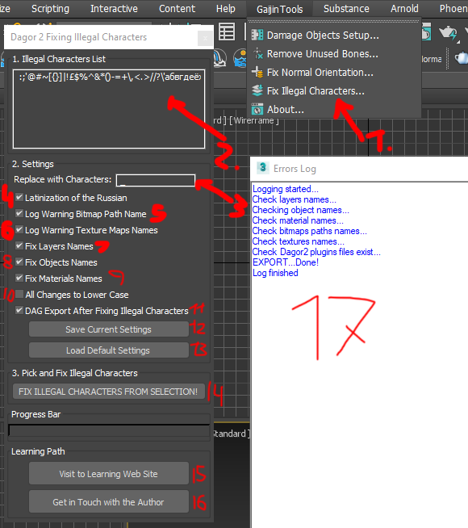
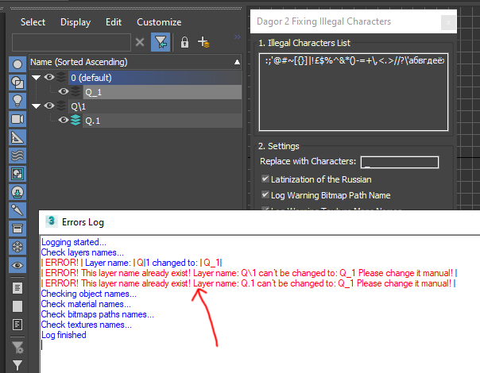
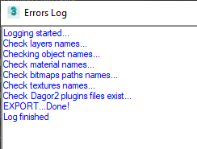
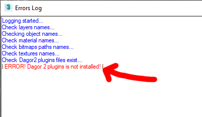
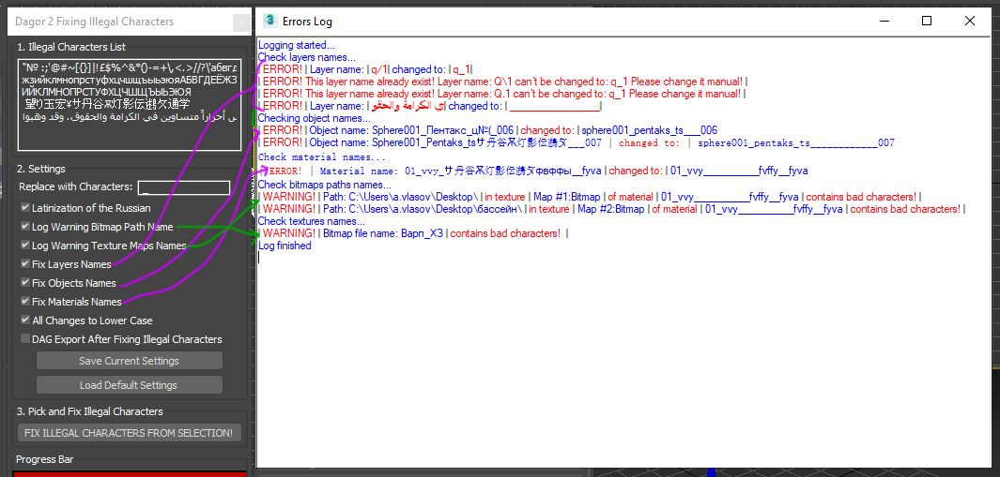

Dagor 2 Fixing Illegal Characters Tool
Installation
Install the script following the provided instructions.
Important
This script requires 3ds Max 2013 or newer version to run.
Accessing the Fixing Illegal Characters Tool
Navigate to Gaijin Tools (1) ▸ Fix Illegal Characters…. This will open the main window of the Dagor 2 Fix Illegal Characters script.
To verify the version of the script, go to Gaijin Tools (1) ▸ About (2). The About window will display the current version. It’s important to check this regularly to ensure your script is up to date.

Note
Make sure that the plugin version is at least 1.4.
Using the Fixing Illegal Characters Tool
To begin, run the script from the GaijinTools ▸ Fix Illegal Characters… (1) menu. The following window will appear:

Tool Options
Illegal Characters List (2): Enter or delete illegal characters in this field.
Replace with Characters (3): Specify characters to replace the illegal ones. If left blank, illegal characters will be removed. This option supports UTF-8, including hieroglyphs, Slavic languages, and Arabic characters, etc.
Latinization of the Russian (4): Converts all Russian characters to Latin according to standard Latinization rules. If unchecked, Russian characters will be replaced with the characters specified in the Replace with Characters (3) field.
Log Warning Bitmap Path Name (5): Logs warnings for file paths containing illegal characters to the log window (17).
Note
No substitutions are made; this only outputs warnings.
Log Warning Texture Maps Names (6): Logs warnings for texture names containing illegal characters to the log window (17).
Note
No substitutions are made; this only outputs warnings.
Fix Layers Names (7): Replaces illegal characters in layer names with the specified replacement characters.
Note
Layer 0 (default) cannot be renamed.
There cannot be layers with the same name. If naming conflicts occur or renaming fails, a warning is displayed in the log window (17):

Fix Objects Names (8): Replaces illegal characters in object names with the specified replacement characters. For check naming it’s necessary to select objects.
Note
This may result in objects having identical names.
Fix Materials Names (9): Replaces illegal characters in material names with the specified replacement characters.
Note
This may result in materials having identical names.
All Changes to Lower Case (10): Converts all names to lower case and performs checks in lower case.
DAG Export After Fixing Illegal Characters (11): Opens the DAG format export window after all checks are complete.
Note
Ensure you are familiar with how Dagor 2 plugins work before enabling this option.
Save Current Settings (12): Saves the current settings.
Load Default Settings (13): Loads the default settings.
FIX ILLEGAL CHARACTERS FROM SELECTION (14): Executes the script to fix illegal characters in the selected objects.
Visit to Learning Website (15): A link to this article.
Get in Touch with the Author (16): Contact the author if the article does not resolve your issue.
Errors Log (17): Displays information about the results of the checks and any changes made.
If the scene contains no errors, you will see a window like this:

Any errors will be highlighted in red and labeled as ERROR! or WARNING!:

A scene containing multiple errors may produce results like this:
